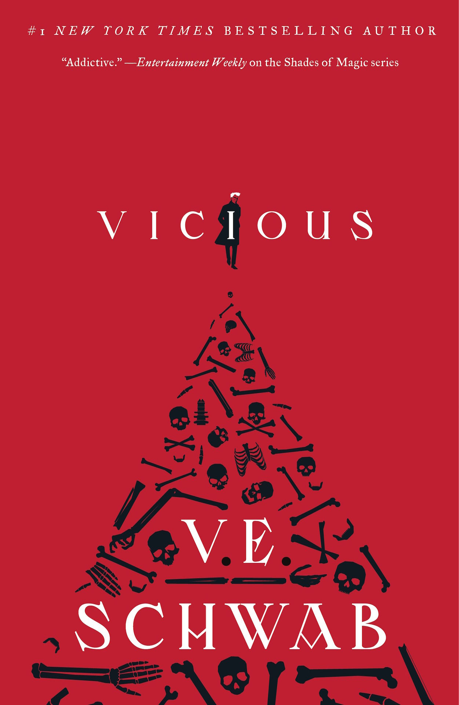
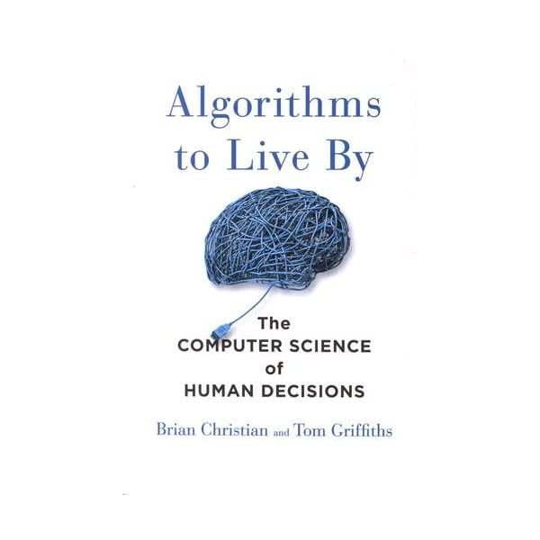
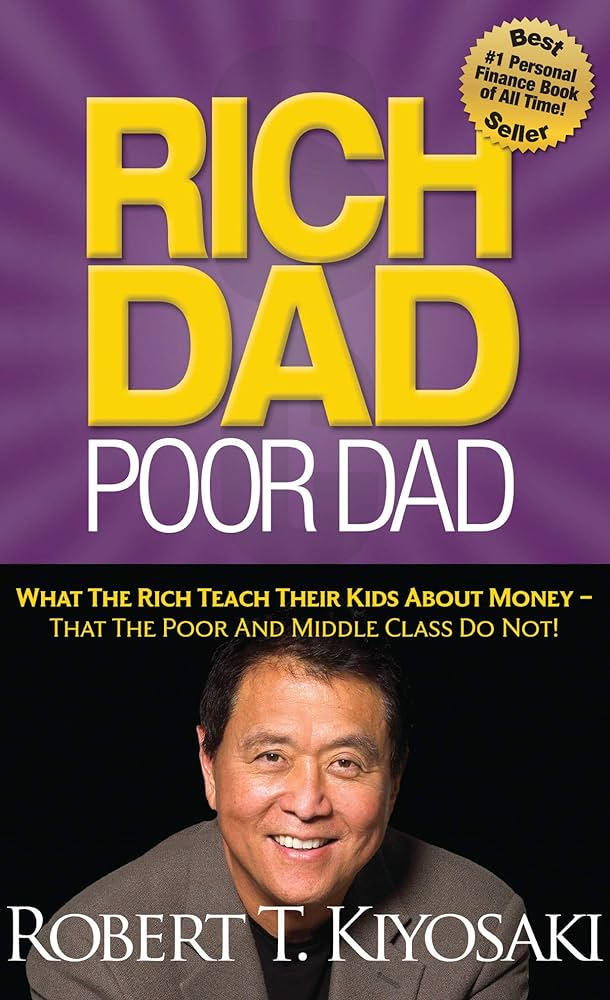
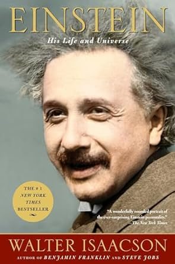

I recently took a getaway trip to New York to visit my friends for New Years! This was a special trip because I was able to see NY for the first time while visting my buddy who I haven't seen in a couple of years all at time. The food scene there is insane!
So you want to know my 3 favorite pet names huh?
What is my favorite restaurant you ask: phopasteurboston
One can never go wrong with pho. Especially in the winter time. Personally I think what makes pho so great is the broth. If you get the broth right, then I consider you a great pho spot. Anyone can get the noodles right but getting the broth right is HARD!
And lastly, you want my favorite books:
| Vicious |  | VE Schwab | As of right now, they are still introducing the characters so I can't tell just yet what it is about but I have heard good things. |
| Algorithms to Live By |  | Brian Christian and Tom Griffiths | This book takes algorithms and applies them to real world problems. |
| Rich Dad, Poor Dad |  | Robert Kiyosaki | A book that encourages us to take risks in life. |
| Einstein |  | Walter Isaacson | A biography of Albert Einstein. |